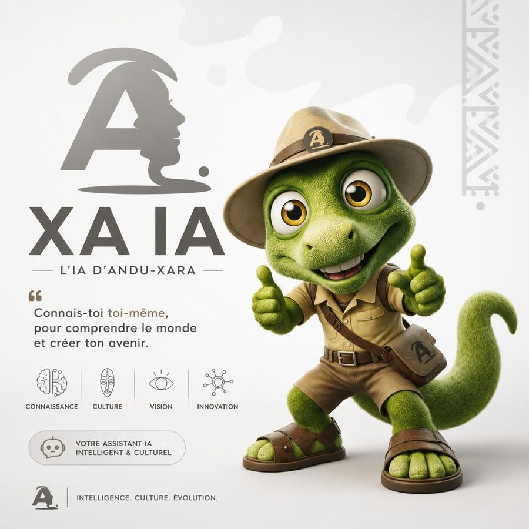

Mon espace · Langue soninké
Salaamu aleykum
Que la paix soit sur toi.
Je suis XA IA, une intelligence artificielle conçue pour parler, écrire et enseigner le soninké. Dis-moi bonjour, pose-moi une question, ou ouvre le dictionnaire.

Dictionnaires
Cours préparés et linguistique
Mots et phrases
Mon espace
Tout le soninké au même endroit
Choisis ce que tu veux faire.
Assistant
Discute avec XA IA. Elle répond en soninké, avec la traduction française, sur tous les sujets.
Ouvrir →Dictionnaire
Cherche un mot soninké ou français, parcours les thèmes, écoute-le prononcer.
Ouvrir →Apprentissage
Cours par thème, alphabet, règles d’écriture, cartes de révision et quiz.
Ouvrir →Traduction
Du français au soninké et du soninké au français, mot à mot ou phrase par phrase.
Ouvrir →Proposer un mot
Tu connais un mot ou une phrase que XA IA doit connaître ? Écris-le avec sa traduction.
Ouvrir →Soutenir XA IA
Aide la langue soninké à grandir : échange avec nous, contribue ou participe au projet.
Ouvrir →Héritage · Mémoire
La langue des anciens, portée par la jeunesse
Parole du jour
Le soninké d’abord, le français ensuite
Une IA qui grandit avec sa communauté
Comment XA IA apprend
Des centaines de mots et de phrases du quotidien, de nombres et de salutations, relus et recoupés.
Alphabet soninké, voyelles longues et brèves, pronoms, pluriel, questions : XA IA les applique quand elle écrit.
Chaque mot proposé par la communauté est relu puis validé avant que XA IA ne l’utilise. Proposer un mot.